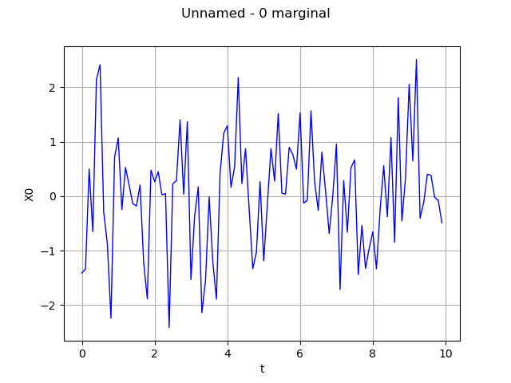
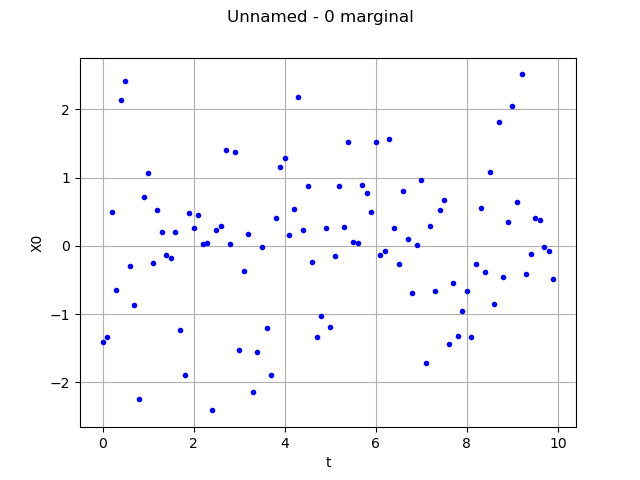

Manipulate a time series
The objective here is to create and manipulate a time series.
A time series is a particular field where the mesh  1-d and regular, eg a time grid
1-d and regular, eg a time grid  .
.
It is possible to draw a time series, using interpolation between the values: see the use case on the Field.
A time series can be obtained as a realization of a multivariate stochastic process
![X: \Omega \times [0,T] \rightarrow \mathbb{R}^d]() of dimension
of dimension  where
where ![[0,T]]() is discretized according to the regular grid .
The values
is discretized according to the regular grid .
The values  of the time series are defined by:
of the time series are defined by:
A time series is stored in the TimeSeries object that stores the regular time grid and the associated values.
import openturns as ot
import openturns.viewer as viewer
from matplotlib import pylab as plt
ot.Log.Show(ot.Log.NONE)
Create the RegularGrid
tMin = 0.0
timeStep = 0.1
N = 100
myTimeGrid = ot.RegularGrid(tMin, timeStep, N)
Case 1: Create a time series from a time grid and values
Care! The number of steps of the time grid must correspond to the size of the values
myValues = ot.Normal(3).getSample(myTimeGrid.getVertices().getSize())
myTimeSeries = ot.TimeSeries(myTimeGrid, myValues)
myTimeSeries
[ t X0 X1 X2 ]
0 : [ 0 -1.40973 0.711103 -1.75418 ]
1 : [ 0.1 -1.33661 0.269893 1.41368 ]
2 : [ 0.2 0.499241 1.15854 -0.098967 ]
3 : [ 0.3 -0.650467 1.46114 0.61372 ]
4 : [ 0.4 2.14201 -1.66772 -0.151473 ]
5 : [ 0.5 2.4158 0.137289 -0.969704 ]
6 : [ 0.6 -0.292688 -1.02522 -0.354939 ]
7 : [ 0.7 -0.869302 0.266897 0.296524 ]
8 : [ 0.8 -2.24114 -1.5607 -2.272 ]
9 : [ 0.9 0.722451 -2.16128 -0.32861 ]
10 : [ 1 1.06975 -1.77994 -0.832708 ]
11 : [ 1.1 -0.245372 -0.0205006 -0.170101 ]
12 : [ 1.2 0.529296 -0.725104 -1.16247 ]
13 : [ 1.3 0.199523 0.727148 -0.260688 ]
14 : [ 1.4 -0.136772 0.52023 -0.659133 ]
15 : [ 1.5 -0.180673 -1.04885 0.512371 ]
16 : [ 1.6 0.20648 -0.960832 0.414682 ]
17 : [ 1.7 -1.22871 2.57497 -0.00804901 ]
18 : [ 1.8 -1.8859 0.830757 -0.378346 ]
19 : [ 1.9 0.479046 1.60938 -0.570841 ]
20 : [ 2 0.269096 0.803503 0.583218 ]
21 : [ 2.1 0.449756 -0.693556 1.89666 ]
22 : [ 2.2 0.0270818 -0.258272 -0.37012 ]
23 : [ 2.3 0.0456596 -0.343048 -0.392484 ]
24 : [ 2.4 -2.41093 1.93921 -0.590044 ]
25 : [ 2.5 0.22705 -0.141765 0.855507 ]
26 : [ 2.6 0.286761 0.564812 -0.509701 ]
27 : [ 2.7 1.40334 -1.37852 0.434035 ]
28 : [ 2.8 0.0342518 0.896116 -0.870577 ]
29 : [ 2.9 1.36995 0.272597 0.579223 ]
30 : [ 3 -1.5321 0.957065 0.427663 ]
31 : [ 3.1 -0.36668 0.648699 -0.00464944 ]
32 : [ 3.2 0.171548 -0.0795761 0.455389 ]
33 : [ 3.3 -2.14009 0.933245 0.818686 ]
34 : [ 3.4 -1.54826 0.370246 -0.773089 ]
35 : [ 3.5 -0.0129833 0.187309 -2.13145 ]
36 : [ 3.6 -1.19768 -0.00500185 -0.125673 ]
37 : [ 3.7 -1.89201 3.40565 -0.103576 ]
38 : [ 3.8 0.415448 0.727255 0.978855 ]
39 : [ 3.9 1.15808 0.295275 0.283934 ]
40 : [ 4 1.29426 0.200773 0.342265 ]
41 : [ 4.1 0.164085 -0.608383 0.144346 ]
42 : [ 4.2 0.537733 0.696557 1.18791 ]
43 : [ 4.3 2.18097 -0.194809 0.628316 ]
44 : [ 4.4 0.230866 -0.648071 -0.0280203 ]
45 : [ 4.5 0.871005 1.24473 -0.106358 ]
46 : [ 4.6 -0.234489 -2.0102 0.121701 ]
47 : [ 4.7 -1.33163 -0.825457 -1.21658 ]
48 : [ 4.8 -1.02579 -1.22486 -0.735057 ]
49 : [ 4.9 0.267431 -0.313967 0.328403 ]
50 : [ 5 -1.18542 0.272577 -0.537997 ]
51 : [ 5.1 -0.154628 0.0348939 0.357208 ]
52 : [ 5.2 0.87381 -1.4897 -1.60323 ]
53 : [ 5.3 0.276884 -0.205279 0.313591 ]
54 : [ 5.4 1.52063 2.12789 0.15741 ]
55 : [ 5.5 0.056432 1.05201 -1.06929 ]
56 : [ 5.6 0.0389696 0.108862 1.56022 ]
57 : [ 5.7 0.897858 0.0713179 0.329058 ]
58 : [ 5.8 0.768345 -0.201722 0.148307 ]
59 : [ 5.9 0.498826 -0.540609 0.202215 ]
60 : [ 6 1.52964 -1.19218 0.524954 ]
61 : [ 6.1 -0.127176 1.00122 0.299567 ]
62 : [ 6.2 -0.0732479 -0.592801 0.509773 ]
63 : [ 6.3 1.56808 0.369343 0.687346 ]
64 : [ 6.4 0.26022 1.5601 0.68388 ]
65 : [ 6.5 -0.260408 0.169652 -1.01657 ]
66 : [ 6.6 0.810285 -0.934548 0.440233 ]
67 : [ 6.7 0.102655 0.16255 0.977606 ]
68 : [ 6.8 -0.685128 -0.0411968 -0.161531 ]
69 : [ 6.9 0.00948899 -0.699237 0.835643 ]
70 : [ 7 0.961209 -0.395342 0.250509 ]
71 : [ 7.1 -1.71279 -0.303372 1.71343 ]
72 : [ 7.2 0.287997 -0.346204 -1.24308 ]
73 : [ 7.3 -0.661934 -0.539626 0.78918 ]
74 : [ 7.4 0.525199 0.265505 -0.615353 ]
75 : [ 7.5 0.667728 -0.320656 -0.00603524 ]
76 : [ 7.6 -1.44043 0.0706512 0.400517 ]
77 : [ 7.7 -0.537003 -2.13043 0.186229 ]
78 : [ 7.8 -1.32629 0.242601 -0.897333 ]
79 : [ 7.9 -0.957364 1.58824 -0.238077 ]
80 : [ 8 -0.654398 1.49892 -0.713136 ]
81 : [ 8.1 -1.33516 0.567629 0.640198 ]
82 : [ 8.2 -0.259729 0.192286 -1.40222 ]
83 : [ 8.3 0.560018 -1.35624 1.03452 ]
84 : [ 8.4 -0.378793 -0.125727 -0.587836 ]
85 : [ 8.5 1.07894 -1.66939 1.70834 ]
86 : [ 8.6 -0.845941 -0.178621 -0.195884 ]
87 : [ 8.7 1.81133 0.400036 1.10812 ]
88 : [ 8.8 -0.455236 -0.793417 2.28383 ]
89 : [ 8.9 0.351885 -0.0608221 1.18257 ]
90 : [ 9 2.05724 2.0836 -1.10946 ]
91 : [ 9.1 0.646117 0.314088 -1.25919 ]
92 : [ 9.2 2.51347 1.10677 -1.23708 ]
93 : [ 9.3 -0.405063 1.24478 0.258866 ]
94 : [ 9.4 -0.1138 0.3815 0.155791 ]
95 : [ 9.5 0.402412 1.33272 -0.805619 ]
96 : [ 9.6 0.385421 -1.61086 -0.687429 ]
97 : [ 9.7 -0.021074 -1.40527 -0.602909 ]
98 : [ 9.8 -0.0745371 -0.287633 -0.402623 ]
99 : [ 9.9 -0.489432 -0.580339 1.19649 ]
Case 2: Get a time series from a Process
myProcess = ot.WhiteNoise(ot.Normal(3), myTimeGrid)
myTimeSeries2 = myProcess.getRealization()
myTimeSeries2
| t | X0 | X1 | X2 |
|---|
| 0 | 0 | 1.004556 | 0.5372572 | -0.08770909 |
|---|
| 1 | 0.1 | 1.423935 | 0.6820146 | 2.884055 |
|---|
| 2 | 0.2 | 0.2796988 | -1.178997 | -0.143892 |
|---|
| 3 | 0.3 | 0.6813079 | 0.01437919 | 0.5099701 |
|---|
| 4 | 0.4 | -1.060234 | 0.04483657 | 0.2499197 |
|---|
| 5 | 0.5 | 1.24773 | -0.3856004 | -0.2880728 |
|---|
| 6 | 0.6 | -0.5890517 | 0.4995753 | 1.132313 |
|---|
| 7 | 0.7 | -0.8437811 | 1.43619 | -0.1876503 |
|---|
| 8 | 0.8 | 0.940522 | 0.7151117 | -1.439318 |
|---|
| 9 | 0.9 | -0.1429401 | -0.1765888 | 0.9054335 |
|---|
| 10 | 1 | 0.6688361 | -0.1848348 | -0.2056171 |
|---|
| 11 | 1.1 | 0.8539061 | 1.082717 | 0.7860448 |
|---|
| 12 | 1.2 | -1.839514 | -0.4807376 | -0.7431111 |
|---|
| 13 | 1.3 | 0.2583894 | 0.06498678 | 0.8220976 |
|---|
| 14 | 1.4 | -0.2202976 | -1.267407 | 0.06548754 |
|---|
| 15 | 1.5 | -2.506485 | 0.2182682 | -0.3734256 |
|---|
| 16 | 1.6 | -0.3483342 | -1.020392 | -0.9373684 |
|---|
| 17 | 1.7 | 0.793814 | -0.983334 | -0.4151898 |
|---|
| 18 | 1.8 | 0.1049272 | -0.4991656 | 0.3643877 |
|---|
| 19 | 1.9 | -0.1627931 | 0.4925782 | 0.3548167 |
|---|
| 20 | 2 | -0.8811936 | -0.819895 | -2.106536 |
|---|
| 21 | 2.1 | 0.1773956 | -0.04881701 | -0.9867962 |
|---|
| 22 | 2.2 | -0.8862132 | 1.219161 | 0.266691 |
|---|
| 23 | 2.3 | 0.188304 | 0.8090514 | 1.619885 |
|---|
| 24 | 2.4 | -0.5646788 | -0.9921044 | 0.7245245 |
|---|
| 25 | 2.5 | 0.3057475 | -0.4119946 | 2.759856 |
|---|
| 26 | 2.6 | 0.4088039 | 1.121707 | -0.6501654 |
|---|
| 27 | 2.7 | -1.034288 | 1.150379 | 0.5587453 |
|---|
| 28 | 2.8 | 1.332409 | -0.3225148 | 0.4750779 |
|---|
| 29 | 2.9 | -0.1536095 | 1.035535 | 1.381175 |
|---|
| 30 | 3 | 1.225896 | -0.1056646 | 0.3069166 |
|---|
| 31 | 3.1 | 0.4924758 | 0.4262604 | -0.5698308 |
|---|
| 32 | 3.2 | -0.4156163 | -2.609303 | -2.173168 |
|---|
| 33 | 3.3 | -1.324497 | -1.45585 | 0.1801837 |
|---|
| 34 | 3.4 | 1.421198 | 1.866039 | -0.1742316 |
|---|
| 35 | 3.5 | -1.55547 | 1.4884 | 1.303924 |
|---|
| 36 | 3.6 | -1.061323 | -1.305955 | -1.629615 |
|---|
| 37 | 3.7 | -0.2962869 | 0.8739792 | 0.1051378 |
|---|
| 38 | 3.8 | -0.02998592 | -1.516032 | 1.474471 |
|---|
| 39 | 3.9 | -1.03669 | -1.534651 | 0.8259901 |
|---|
| 40 | 4 | 0.457382 | -0.3865615 | 1.28411 |
|---|
| 41 | 4.1 | -0.3259461 | 1.637177 | -0.8420178 |
|---|
| 42 | 4.2 | -0.2924097 | 0.3615991 | 0.4570965 |
|---|
| 43 | 4.3 | 0.237978 | 1.020826 | 1.699262 |
|---|
| 44 | 4.4 | -0.5438809 | 0.4973056 | -1.469904 |
|---|
| 45 | 4.5 | -2.294773 | -0.2623551 | -1.554523 |
|---|
| 46 | 4.6 | -2.82731 | 0.5825531 | 0.4139608 |
|---|
| 47 | 4.7 | -0.9302437 | 0.549059 | -0.69065 |
|---|
| 48 | 4.8 | -0.6021352 | -0.7677184 | 1.285077 |
|---|
| 49 | 4.9 | -0.22259 | 1.221741 | 0.4439343 |
|---|
| 50 | 5 | -0.7078664 | -1.056912 | 0.5648551 |
|---|
| 51 | 5.1 | 0.2980986 | 1.342418 | 1.085837 |
|---|
| 52 | 5.2 | 0.8239627 | -0.6283856 | -0.8834576 |
|---|
| 53 | 5.3 | 0.8607533 | 1.456264 | 0.1421699 |
|---|
| 54 | 5.4 | -0.3323323 | 0.8952978 | 0.1655028 |
|---|
| 55 | 5.5 | 0.02714461 | 0.1645807 | 0.2626963 |
|---|
| 56 | 5.6 | 1.638611 | 0.1818056 | -0.1240066 |
|---|
| 57 | 5.7 | 1.56386 | -0.5471615 | 0.4136208 |
|---|
| 58 | 5.8 | -0.5009097 | -1.561814 | -2.157897 |
|---|
| 59 | 5.9 | -0.8845609 | -0.03278067 | -0.4371368 |
|---|
| 60 | 6 | 0.9263022 | 0.3640217 | 1.127778 |
|---|
| 61 | 6.1 | -0.2958129 | 0.521623 | -0.5048369 |
|---|
| 62 | 6.2 | -1.126024 | -0.1538759 | 0.9138794 |
|---|
| 63 | 6.3 | -2.058274 | 1.093646 | 0.353957 |
|---|
| 64 | 6.4 | -0.5708488 | 1.521397 | 0.2852253 |
|---|
| 65 | 6.5 | -1.835236 | -0.3044852 | 0.9165636 |
|---|
| 66 | 6.6 | 0.9140664 | 0.1075705 | 0.06927429 |
|---|
| 67 | 6.7 | -0.6650488 | 1.951216 | 0.7997068 |
|---|
| 68 | 6.8 | -0.8125796 | -0.5797791 | 0.1117721 |
|---|
| 69 | 6.9 | -0.2133026 | -1.116885 | -0.872058 |
|---|
| 70 | 7 | 1.629164 | 3.399959 | -0.9405087 |
|---|
| 71 | 7.1 | 0.8080016 | -0.5450092 | 1.626903 |
|---|
| 72 | 7.2 | -0.06128802 | 0.308256 | -0.9618253 |
|---|
| 73 | 7.3 | -1.255094 | 0.4358796 | -0.7273887 |
|---|
| 74 | 7.4 | -0.3513546 | -1.318261 | -0.47417 |
|---|
| 75 | 7.5 | -0.1005602 | 1.643525 | -0.4139103 |
|---|
| 76 | 7.6 | 0.8686027 | -0.4322521 | 1.012874 |
|---|
| 77 | 7.7 | -1.114927 | 0.469528 | 0.9161205 |
|---|
| 78 | 7.8 | -0.356955 | 1.022334 | -2.00257 |
|---|
| 79 | 7.9 | -1.71516 | 0.6274581 | -1.352094 |
|---|
| 80 | 8 | -0.03491598 | -0.03793251 | 0.05596954 |
|---|
| 81 | 8.1 | -0.2810947 | 0.144073 | -2.171863 |
|---|
| 82 | 8.2 | -0.3389453 | 0.5843859 | -0.8390798 |
|---|
| 83 | 8.3 | -1.04138 | 0.3519497 | 1.069267 |
|---|
| 84 | 8.4 | -2.866462 | 1.182504 | 0.2067203 |
|---|
| 85 | 8.5 | -0.6907754 | -0.7425984 | 1.164752 |
|---|
| 86 | 8.6 | -0.09003073 | -1.209451 | 0.7730654 |
|---|
| 87 | 8.7 | -0.8069562 | -1.046643 | 0.1396704 |
|---|
| 88 | 8.8 | 1.067365 | 0.1232827 | -0.776005 |
|---|
| 89 | 8.9 | -0.882326 | -0.0145659 | 0.2200673 |
|---|
| 90 | 9 | 0.4727389 | -0.3159074 | 1.723677 |
|---|
| 91 | 9.1 | 0.5338985 | 0.4875888 | -0.5419431 |
|---|
| 92 | 9.2 | 0.7959215 | -0.9714537 | -0.3666259 |
|---|
| 93 | 9.3 | 0.1363355 | 1.229809 | -0.4606246 |
|---|
| 94 | 9.4 | 0.5330227 | -0.9875807 | 0.2573491 |
|---|
| 95 | 9.5 | 0.415046 | -0.7534109 | 0.07963906 |
|---|
| 96 | 9.6 | 0.5442014 | -1.354907 | -0.03364811 |
|---|
| 97 | 9.7 | -0.7464795 | -0.6355808 | 0.7484256 |
|---|
| 98 | 9.8 | -1.11568 | 0.1287166 | 0.8080038 |
|---|
| 99 | 9.9 | -0.5232872 | -0.02984434 | 0.04724269 |
|---|
Get the number of values of the time series
Get the dimension of the values observed at each time
myTimeSeries.getMesh().getDimension()
Get the value Xi at index i
i = 37
print("Xi = ", myTimeSeries.getValueAtIndex(i))
Xi = [-1.89201,3.40565,-0.103576]
Get the time series at index i : Xi
i = 37
print("Xi = ", myTimeSeries[i])
Xi = [-1.89201,3.40565,-0.103576]
Get a the marginal value at index i of the time series
i = 37
# get the time stamp:
print("ti = ", myTimeSeries.getTimeGrid().getValue(i))
# get the first component of the corresponding value :
print("Xi1 = ", myTimeSeries[i, 0])
ti = 3.7
Xi1 = -1.892006989486264
Get all the values (X1, .., Xn) of the time series
| X0 | X1 | X2 |
|---|
| 0 | -1.409734 | 0.7111029 | -1.754176 |
|---|
| 1 | -1.336608 | 0.2698927 | 1.413675 |
|---|
| 2 | 0.4992414 | 1.158536 | -0.09896703 |
|---|
| 3 | -0.6504669 | 1.461145 | 0.6137203 |
|---|
| 4 | 2.142012 | -1.667722 | -0.1514732 |
|---|
| 5 | 2.4158 | 0.1372886 | -0.9697043 |
|---|
| 6 | -0.292688 | -1.025222 | -0.3549386 |
|---|
| 7 | -0.8693017 | 0.266897 | 0.296524 |
|---|
| 8 | -2.241144 | -1.560704 | -2.271998 |
|---|
| 9 | 0.7224505 | -2.161275 | -0.3286104 |
|---|
| 10 | 1.069747 | -1.779941 | -0.8327076 |
|---|
| 11 | -0.2453716 | -0.0205006 | -0.1701006 |
|---|
| 12 | 0.5292955 | -0.7251038 | -1.162473 |
|---|
| 13 | 0.1995235 | 0.7271477 | -0.2606875 |
|---|
| 14 | -0.1367718 | 0.5202298 | -0.6591333 |
|---|
| 15 | -0.1806734 | -1.048847 | 0.5123711 |
|---|
| 16 | 0.2064803 | -0.960832 | 0.4146824 |
|---|
| 17 | -1.228714 | 2.57497 | -0.008049008 |
|---|
| 18 | -1.885899 | 0.830757 | -0.3783459 |
|---|
| 19 | 0.4790463 | 1.609382 | -0.5708413 |
|---|
| 20 | 0.2690964 | 0.8035033 | 0.5832181 |
|---|
| 21 | 0.4497564 | -0.6935559 | 1.896662 |
|---|
| 22 | 0.02708176 | -0.258272 | -0.37012 |
|---|
| 23 | 0.04565963 | -0.3430478 | -0.3924844 |
|---|
| 24 | -2.410929 | 1.939206 | -0.5900438 |
|---|
| 25 | 0.2270499 | -0.1417654 | 0.8555065 |
|---|
| 26 | 0.286761 | 0.5648119 | -0.5097008 |
|---|
| 27 | 1.403344 | -1.378522 | 0.4340351 |
|---|
| 28 | 0.03425181 | 0.8961165 | -0.8705775 |
|---|
| 29 | 1.369953 | 0.2725969 | 0.5792226 |
|---|
| 30 | -1.532103 | 0.957065 | 0.4276634 |
|---|
| 31 | -0.3666802 | 0.6486989 | -0.004649441 |
|---|
| 32 | 0.1715484 | -0.07957611 | 0.4553892 |
|---|
| 33 | -2.140093 | 0.9332446 | 0.8186856 |
|---|
| 34 | -1.548256 | 0.370246 | -0.773089 |
|---|
| 35 | -0.01298333 | 0.1873089 | -2.131449 |
|---|
| 36 | -1.197682 | -0.005001849 | -0.1256726 |
|---|
| 37 | -1.892007 | 3.40565 | -0.1035762 |
|---|
| 38 | 0.4154477 | 0.7272545 | 0.9788553 |
|---|
| 39 | 1.158081 | 0.2952752 | 0.2839339 |
|---|
| 40 | 1.294258 | 0.2007735 | 0.342265 |
|---|
| 41 | 0.1640854 | -0.6083832 | 0.1443463 |
|---|
| 42 | 0.5377329 | 0.6965567 | 1.187906 |
|---|
| 43 | 2.180975 | -0.1948093 | 0.6283156 |
|---|
| 44 | 0.2308662 | -0.6480712 | -0.02802031 |
|---|
| 45 | 0.8710046 | 1.244731 | -0.1063582 |
|---|
| 46 | -0.2344887 | -2.010204 | 0.1217012 |
|---|
| 47 | -1.331632 | -0.8254575 | -1.216578 |
|---|
| 48 | -1.025789 | -1.224865 | -0.7350567 |
|---|
| 49 | 0.2674311 | -0.3139666 | 0.3284034 |
|---|
| 50 | -1.185418 | 0.2725766 | -0.5379969 |
|---|
| 51 | -0.1546276 | 0.03489387 | 0.3572081 |
|---|
| 52 | 0.8738098 | -1.489697 | -1.603233 |
|---|
| 53 | 0.2768838 | -0.2052791 | 0.3135911 |
|---|
| 54 | 1.520626 | 2.127892 | 0.1574096 |
|---|
| 55 | 0.05643199 | 1.05201 | -1.069286 |
|---|
| 56 | 0.03896958 | 0.1088619 | 1.560223 |
|---|
| 57 | 0.8978581 | 0.07131786 | 0.3290581 |
|---|
| 58 | 0.7683447 | -0.2017215 | 0.1483074 |
|---|
| 59 | 0.4988259 | -0.5406089 | 0.202215 |
|---|
| 60 | 1.52964 | -1.192179 | 0.5249542 |
|---|
| 61 | -0.1271758 | 1.001217 | 0.2995675 |
|---|
| 62 | -0.07324792 | -0.5928008 | 0.509773 |
|---|
| 63 | 1.568079 | 0.3693428 | 0.6873462 |
|---|
| 64 | 0.2602205 | 1.560101 | 0.6838802 |
|---|
| 65 | -0.2604079 | 0.1696515 | -1.016573 |
|---|
| 66 | 0.8102853 | -0.9345477 | 0.4402335 |
|---|
| 67 | 0.1026545 | 0.1625502 | 0.9776058 |
|---|
| 68 | -0.6851276 | -0.04119683 | -0.1615313 |
|---|
| 69 | 0.009488993 | -0.6992373 | 0.8356431 |
|---|
| 70 | 0.9612086 | -0.3953424 | 0.2505092 |
|---|
| 71 | -1.712787 | -0.3033722 | 1.713433 |
|---|
| 72 | 0.2879968 | -0.3462038 | -1.243077 |
|---|
| 73 | -0.6619336 | -0.5396257 | 0.7891796 |
|---|
| 74 | 0.525199 | 0.2655049 | -0.6153533 |
|---|
| 75 | 0.6677281 | -0.3206562 | -0.00603524 |
|---|
| 76 | -1.440427 | 0.07065125 | 0.4005165 |
|---|
| 77 | -0.5370034 | -2.130432 | 0.1862285 |
|---|
| 78 | -1.326288 | 0.2426011 | -0.8973327 |
|---|
| 79 | -0.9573643 | 1.588237 | -0.2380769 |
|---|
| 80 | -0.6543979 | 1.498919 | -0.7131357 |
|---|
| 81 | -1.335157 | 0.5676285 | 0.640198 |
|---|
| 82 | -0.259729 | 0.1922855 | -1.402221 |
|---|
| 83 | 0.5600177 | -1.356244 | 1.034522 |
|---|
| 84 | -0.3787931 | -0.1257271 | -0.5878356 |
|---|
| 85 | 1.078941 | -1.669386 | 1.708344 |
|---|
| 86 | -0.8459409 | -0.1786205 | -0.1958844 |
|---|
| 87 | 1.811325 | 0.4000363 | 1.108118 |
|---|
| 88 | -0.4552358 | -0.7934174 | 2.283829 |
|---|
| 89 | 0.351885 | -0.06082214 | 1.182574 |
|---|
| 90 | 2.057236 | 2.083603 | -1.109457 |
|---|
| 91 | 0.6461174 | 0.3140881 | -1.259195 |
|---|
| 92 | 2.51347 | 1.106768 | -1.237082 |
|---|
| 93 | -0.4050629 | 1.244775 | 0.2588656 |
|---|
| 94 | -0.1137998 | 0.3814998 | 0.1557911 |
|---|
| 95 | 0.4024124 | 1.332716 | -0.8056192 |
|---|
| 96 | 0.3854209 | -1.61086 | -0.6874292 |
|---|
| 97 | -0.02107395 | -1.405266 | -0.6029087 |
|---|
| 98 | -0.07453712 | -0.287633 | -0.4026233 |
|---|
| 99 | -0.4894317 | -0.5803388 | 1.196489 |
|---|
Compute the temporal Mean
It corresponds to the mean of the values of the time series
myTimeSeries.getInputMean()
[0.0252771,0.032915,0.00141464]
Draw the marginal i of the time series using linear interpolation
graph = myTimeSeries.drawMarginal(0)
view = viewer.View(graph)

with no interpolation
graph = myTimeSeries.drawMarginal(0, False)
view = viewer.View(graph)
plt.show()

![\forall i \in [0, N-1],\quad \underline{x}_i= X(\omega)(t_i)]()